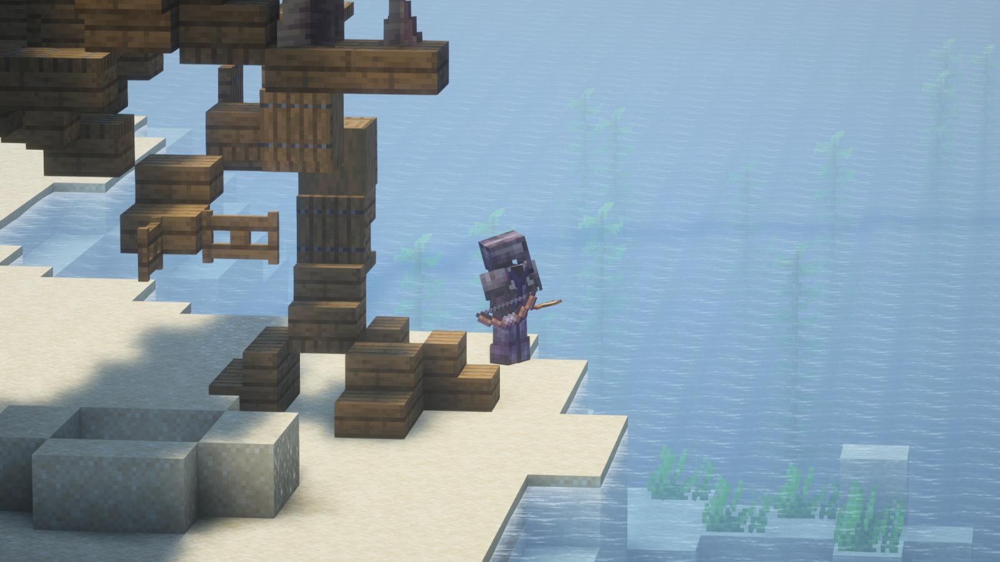
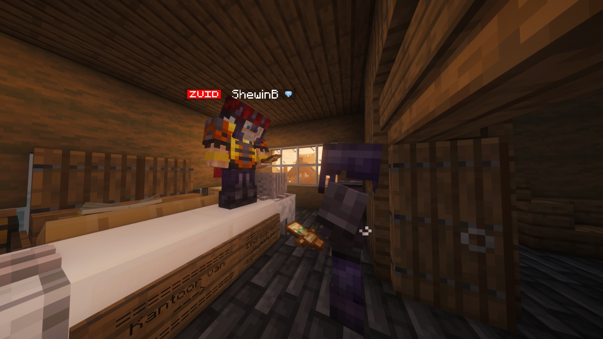
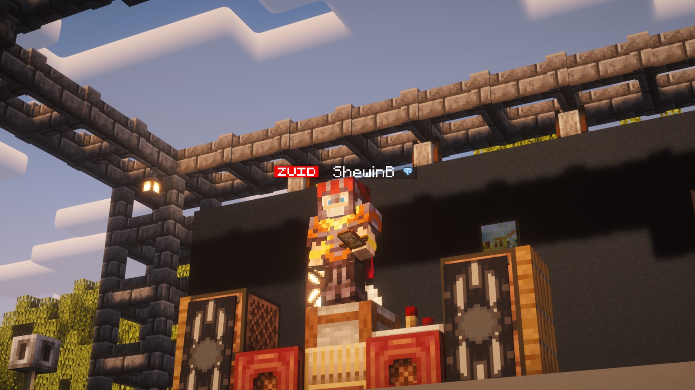
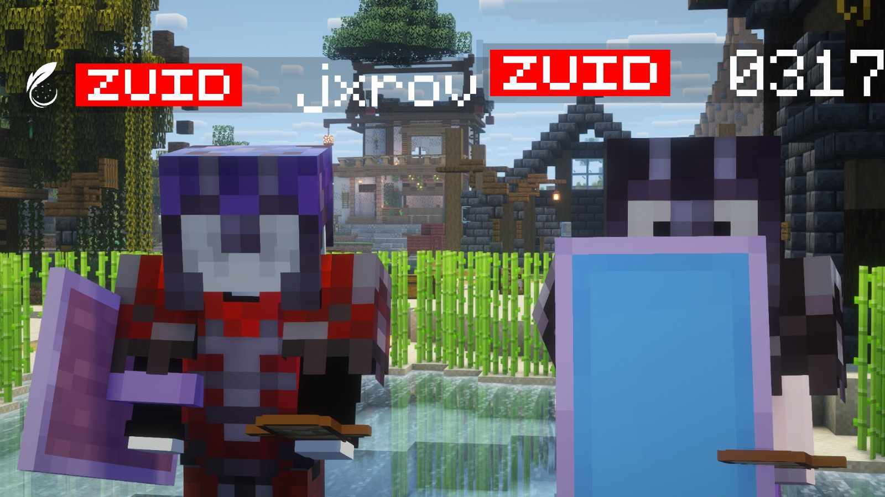

Het nieuws uit Oost & omstreken
De Oostelijke Krant
 JaymianLee
JaymianLeeZuid breekt, festival ontspoort
24-02-2026 · Dossier: revives, leiderschap, blacklist, concertgeweld
Wat begon als een meningsverschil over revives rond De Bandiet, groeide in één dag uit tot een volledige machtsbreuk in Zuid. De spanning liep op via propaganda, blacklist-besluiten en symbolische aanvallen op builds. Rond 19:10 volgde de fatale ontknoping rond Maurits. Later op de avond probeerde ShewinB met een festival juist verbinding te creëren tussen alle windrichtingen, maar ook dat eindigde in geweld. Deze editie brengt het complete verhaal, met tijdlijn, verklaringen en een bredere analyse van de impact op de server.

De oorsprong: revive 1 en het eerste scheurpunt
Volgens betrokkenen begon de breuk bij de eerste revive van De Bandiet. Daarbij werden twee spelers teruggebracht, waaronder Gio en Stroop. Maurits ging daar openlijk tegenin. Opvallend was dat hij tijdens de revive zelf nauwelijks zichtbaar was op de plek waar de besluiten werden genomen, maar daarna wel hard de discussie opzocht.
In diezelfde fase veranderde de machtsverdeling in Zuid: 0317 schoof naar voren als nieuwe leider/vertegenwoordiger, waar Maurits die rol eerder droeg. Vanaf dat moment werd het conflict niet alleen inhoudelijk, maar ook politiek.
Propaganda, wantrouwen en de tweede escalatie
Na de leiderschapswissel begon Maurits volgens meerdere bronnen actief te verspreiden dat 0317 een gevaar zou zijn voor heel Zuid en voor de algemene veiligheid. Die framing sloeg aan bij sommige spelers, maar werkte bij anderen juist als olie op het vuur.
Toen een tweede revive-moment rond De Bandiet volgde, ontstond opnieuw dezelfde botsing. Dit keer zonder uitweg: de lijn van Maurits en de lijn van de rest van Zuid lagen volledig uit elkaar. Uiteindelijk leidde dit tot zijn plaatsing op de blacklist.

Het standbeeld-incident naast het eiland van Jxrov
In de nasleep bouwde Maurits een standbeeld naast het eiland van Jxrov. Dat object kreeg direct politieke lading: voor de één een statement, voor de ander provocatie op symbolisch terrein. Het standbeeld werd later opgeblazen, waarmee het conflict de stap maakte van woorden naar openlijke sabotage.
Vanaf dat punt verdween vrijwel elke ruimte voor bemiddeling. Het vertrouwen was op en beide kampen bereidden zich zichtbaar voor op confrontatie.
19:10 - de fatale confrontatie rond Maurits
Rond 19:10 kwam het tot een direct gevecht. Volgens aanwezigen werd Maurits getrapt en uitgekrit; zijn totem popte en kort daarna stierf hij. Binnen Zuid werd dit door meerdere spelers gezien als het harde eindpunt van een lange onrustperiode.
0317 reageerde met de inmiddels veelbesproken quote: "Full box 200 pump", verwijzend naar de situatie waarin Maurits in cobweb werd gefullboxed. Zowel 0317 als Jxrov vierden zichtbaar dat het hoofdstuk eindelijk afgesloten leek.
21:00 - ShewinB opent OOST-festival
Later op de avond sloeg de sfeer eerst volledig om. ShewinB trapte een groot OOST-festival af met een ambitieus doel: alle windrichtingen samenbrengen op één plek - Noord, Oost, Zuid en West. De set bestond uit meerdere stijlen, van pop en trap tot rap.
Ook het nummer van de Eindredacteur werd gedraaid: Netjes, onder alter ego Rico Basura. De start werd door aanwezigen beschreven als feestelijk, druk en verrassend goed bezocht.


Van concert naar gevechten
Het festival werd abrupt onderbroken door gevechten tussen groepen. Volgens verklaringen kan alcoholgebruik een rol hebben gespeeld in de escalatie. Vaststaat dat de avond meerdere slachtoffers kende: Bxnzna (21:30), Brummelboy (21:31) en later Nachtvogel (21:45, onder nog onduidelijke omstandigheden).
Tijdens het interview was er ook een intermezzo waarin De Bandiet ShewinB een klap gaf. Dat moment leidde niet direct tot zichtbaar letsel bij ShewinB, maar onderstreepte wel hoe fragiel de situatie al was.
Verklaringen na afloop
ShewinB blikte gemengd terug: "Ik ben tevreden maar ook teleurgesteld over hoe het is geëindigd. Het begon heel goed, maar uiteindelijk liep het mis. Ik was misschien te snel met grote plannen na mijn dood en had rustiger moeten opbouwen."
Extra noot uit de purge-omgeving: Bollie650 gaf aan dat hij Jochem09 had gekilled, die als teammate van Gio werd genoemd. Als slot kwam er nog een opmerkelijke donatie binnen van een "nep-bandiet": vier veren voor de boeken van de krant.
Redactionele analyse: waarom deze dag belangrijk blijft
24-02-2026 laat drie lijnen tegelijk zien: bestuurlijke instabiliteit in Zuid, een harde veiligheidsrealiteit op straatniveau en een culturele poging tot verbinding die omslaat in geweld. Dat maakt deze dag meer dan incidentnieuws: het is een structuurmoment voor de serverpolitiek.
Als de komende dagen geen duidelijke afspraken komen over revives, blacklist-procedure en event-beveiliging, dan is de kans groot dat deze dynamiek zich herhaalt. Het vertrouwen tussen groepen staat onder druk en symbolische acties (zoals het opblazen van standbeelden) werken nu direct door in geweld.